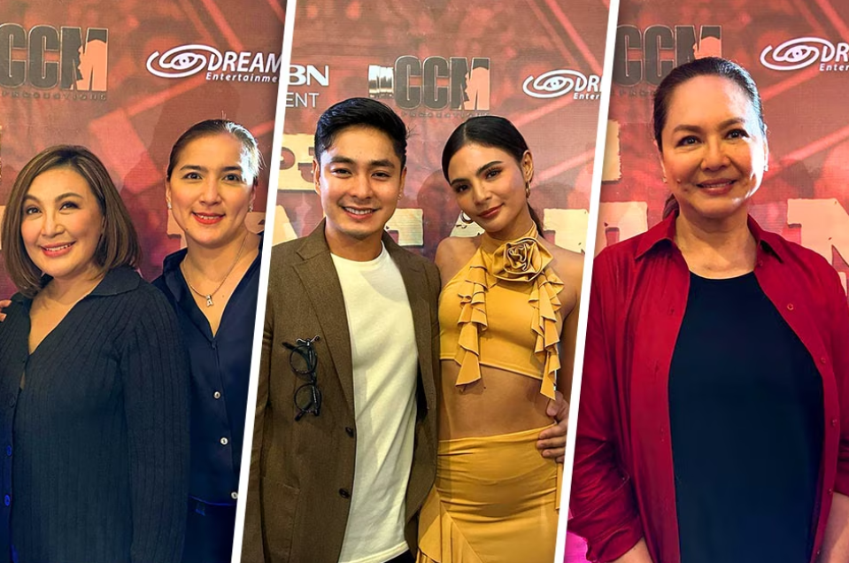

Coco Martin offers ‘Batang Quiapo’ award for Jaclyn Jose, Deo Endrinal
From ABS-CBN News
Published May 13, 2024 09:04 AM PHT

Photos from Dreamscape Entertainment
Kapamilya actor Coco Martin, who received an award on behalf of his hit primetime drama “Batang Quiapo,” offered the accolade to the late Jaclyn Jose and Dreamscape head Deo Endrinal.
The Box Office Entertainment awards recognized the hit action-packed series as the “Popular TV Program-Primetime Drama,” Sunday evening, in Quezon City.
“Inaalay namin to kay Mommy Jane, Sir Deo. Para sa 'yo to Mommy Jane,” Martin said.
The actor also thanked the ABS-CBN bosses for their support in continually pushing the boundaries of entertainment.
“Sa lahat ng bosses ng ABS-CBN na patuloy naniniwala at sumusuporta sa amin para magkatrabaho kasamahan natin sa industries, para sa inyo ito. ... Nandito kami para maghanapbuhay, para lahat mabigyan ng opportunity,” Martin said.
(To all the bosses of ABS-CBN who continuously believe in us and support us to work together with our colleagues in the industry, this is for you... We are here to make a living, to be given opportunities)
Martin, however, stressed, this achievement is a team effort.
“Sobrang sarap sa pakiramdam kasi pinaghihirapan namin buoin lahat ang 'BQ.' Salamat sa buong team, creatives, directors, staff and crew, and lahat ng tumatangkilik at sumusubaybay gabi-gabi,” he said.
“Napaka-important nito. Ito ang paraan magtulong-tulong ang industriya para masabi natin buhay ang pelikula at telebisyon sa Pilipinas,” Martin added.

Jayda, aminadong sanay magtapon
ng basura
Read More

The Unmasking of a killer: Kaila Estrada reflects on her pivotal role in 'Can't Buy Me Love'
Read More

WATCH: ZEROBASEONE makes comeback with bright 'Feel the Pop' MV
Read More